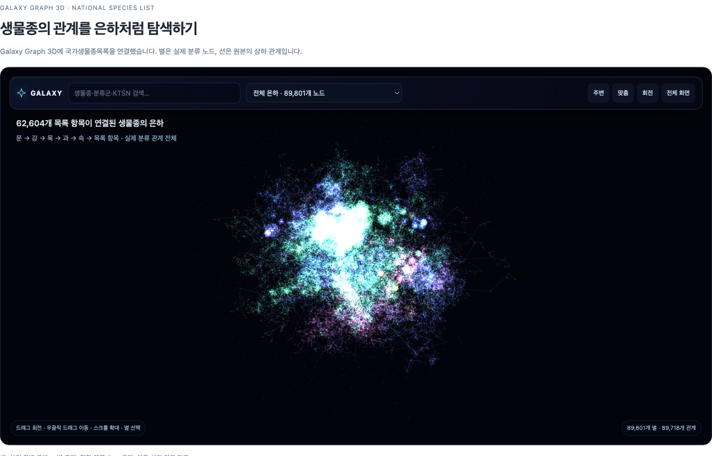

모르는 지점이 다음 작업을 정합니다.
‘태조는 누구인가?’에서 왕조가 빠졌다면, 답을 늘리기 전에 구분할 맥락을 찾습니다. 내 목적에 도움이 되는 미답변 질문을 골라 둡니다.
검증한 근거·관계·운영 규칙이 다음 사이클에 다시 쓰입니다.
GPTers 24 · WEEK 04 · KNOWLEDGE THAT KEEPS GROWING
한 번 정리한 지식이 다음 질문의 발판이 되고,
새 근거가 기존 지식을 더 단단하게 만드는 시스템.
이번 주에는 그 복리의 순환을 내 방식으로 설정합니다.
01 / FROM A COLLECTION TO A LIVING SYSTEM
자료를 읽을 때마다 주장·조건·출처를 연결해 둡니다. 다음 질문에서는 그 연결을 재사용하고, 부족한 근거를 찾아 기존 설명을 고칩니다. 쌓인 지식과 개선된 운영 방식이 다음 사이클의 출발점이 되는 것을 ‘지식의 복리’라고 부릅니다.
‘태조는 누구인가?’에서 왕조가 빠졌다면, 답을 늘리기 전에 구분할 맥락을 찾습니다. 내 목적에 도움이 되는 미답변 질문을 골라 둡니다.
검증한 근거·관계·운영 규칙이 다음 사이클에 다시 쓰입니다.
자가증식의 기준은 ‘더 많이’보다 ‘더 잘 답하기’입니다. 새 자료 하나가 여러 노트와 질문의 근거가 될 수 있고, 정정 하나가 연결된 설명을 함께 고칠 수 있습니다. 같은 내용을 중복 생성하거나 근거 없이 연결을 늘리면 복리가 되지 않습니다. 이 순환은 운영 개념도이며 일정한 성장률을 측정하거나 보장하는 그래프가 아닙니다.
새 사료를 읽으면 사건·인물·시점에 연결하고 기존 설명의 적용 범위를 다시 봅니다.
적용일·담당·예외를 바꾸면 연결된 업무 안내와 질문의 답도 함께 검토합니다.
실험 결과나 작품 사례를 기존 가설·기법에 연결하고 반례와 후속 질문을 남깁니다.
02 / SAME RECORDS, DIFFERENT WAYS TO USE THEM
2025년 국가생물종목록 62,604개 항목을 두 가지로 준비했습니다. 플레인은 원문과 전문 검색, 적용본은 같은 원문에 명시적 분류 관계와 DB 집계 도구를 더했습니다. 양쪽 JSONL은 바이트까지 같습니다.
모든 원본 분류 열을 보존합니다. 논리 검색, 전체 일치 개수, 페이지 조회를 사용할 수 있습니다.
62,604개 문서 + FTS5 검색공통 분류군 → 중복 제외 → 전체 범위 → 과별 항목·서로 다른 속 수를 조회합니다.
동일 문서 + 분류 관계 + 집계 도구한 항목을 정확히 찾는 질문에서는 차이가 작았습니다.
시간 중앙값 약 46% 감소. 플레인은 18회 모두 답변 유보, 적용본은 요구한 집계를 완성했습니다.
이번 실험에서는 단순 질문은 차이가 작고, 범위가 넓은 질문은 속도와 답변 품질 모두 확연히 차이가 났습니다. 여기서 품질은 요구한 범위·총계·집계행을 정확하고 빠짐없이 제시하는 정확성과 완전성을 뜻합니다.
“배추흰나비·호랑나비·무당벌레의 공통 상위 분류군에서 각각의 목을 중복 없이 제외하고, 남은 과 중 항목이 100개 이상인 상위 10과의 항목 수와 서로 다른 속 수를 구해 주세요.”
곤충강 21,071개에서 나비목·딱정벌레목을 제외하면 11,411개입니다. 총계만 맞히는 것으로 끝나지 않고 과별 집계와 속 수까지 완성해야 합니다. 과 정보 미확정 1개는 별도로 남깁니다.
| 질문 범위 / 제외 조건 | 제외 후 항목 | 완전 정답 플레인 → 적용 | 시간 플레인 → 적용 |
|---|---|---|---|
| 나비목 / 두 과 제외 | 4,535 | 0/3 → 3/3 | 47.40 → 22.78초 |
| 곤충강 / 중복 목 제외 | 11,411 | 0/3 → 3/3 | 56.35 → 25.16초 |
| 쌍떡잎식물 / 두 목 제외 | 2,317 | 0/3 → 3/3 | 35.33 → 22.94초 |
| 척삭동물문 / 조강·포유강 제외 | 1,586 | 0/3 → 3/3 | 34.26 → 21.77초 |
| 주름버섯강 / 세 속 제외 | 1,947 | 0/3 → 3/3 | 36.35 → 22.14초 |
| 연체동물문 / 두 강 제외 | 1,443 | 0/3 → 3/3 | 44.67 → 20.94초 |
기본 8문항 × 3회 × 2버전 = 48회, 추가 6문항 × 3회 × 2버전 = 36회. 기본 전체 정답은 플레인 21/24·적용 24/24입니다. 두 실험 경과 시간은 각각 약 14분 11초·13분이며, 쌍을 병렬 실행했으므로 개별 시간의 합과 다릅니다.
모델은 gpt-6.1-sol / xhigh, ChatGPT 구독입니다. 이번 비교 실행에서 유료 API·Decisions를 사용하지 않았습니다. 최대 8회 조회·회당 16개 문서·도구 출력 최대 20,000토큰·질문당 300초·재시도 0회로 제한했습니다.
플레인 시간은 답변을 유보하기까지, 적용본 시간은 완전 정답을 내기까지 걸린 시간입니다. 유보는 오답을 지어낸 것과 다릅니다. 명시적 관계와 집계 도구를 함께 제공한 시스템 비교이며, 온톨로지 단독의 인과 효과나 SQL 대비 우월성을 뜻하지 않습니다. 대규모 작업을 위해 고른 6문항이며 모든 질문 유형으로 일반화하지 않습니다.
03 / SEE THE PATH BEHIND THE ANSWER
DECK의 Galaxy Graph 3D를 이 데이터에 적용했습니다. 전체 89,801개 노드 · 89,718개 고유 상하위 연결에서 항목을 검색하고, 여섯 질문의 공통 범위·제외 대상·집계 과를 골라 볼 수 있습니다.

그래프는 시작 버튼을 누르면 불러옵니다. WebGL을 지원하는 브라우저에서 회전·확대·검색할 수 있습니다.
목록 항목의 KTSN과 원본 행, 연결된 분류군을 확인합니다. 별의 위치·거리는 생물학적 유사도를 뜻하지 않습니다.
공통 상위 분류군과 제외되는 두 목, 집계 대상 과가 어떤 경로로 연결되는지 살펴봅니다.
그림이 예쁜지만 보지 않고 선택한 범위·제외 조건·원본 근거가 답과 맞는지 확인합니다.
listedUnder는 ‘원본에 기재된 가장 가까운 상위 분류군’입니다. 결측 계급을 보충하거나 생물학적 직접 부모로 단정하지 않습니다. 배경 먼지는 장식이며 데이터 노드에 포함되지 않습니다.
04 / RDF & OWL · TEN-MINUTE INTRODUCTION
내 파일 안에서 정한 의미를 다른 도구와도 공유하려면 표준 표현이 도움이 됩니다. 이번 주에는 작은 관계 하나를 읽고 바꾸는 것까지 해 봅니다. W3C 권고 표준 명칭에 따라 OWL 2를 다룹니다.
‘호랑이 목록 항목 → 기재된 상위 분류군 → 표범속’을 세 부분으로 씁니다. 대상과 관계에 IRI라는 식별자를 부여합니다.
ex:tigerRecord ex:listedUnder ex:Panthera .‘포유류 목록 항목’은 ‘목록 항목’의 한 종류라고 정의합니다. 대상의 종류와 분류군 계급을 구별합니다.
ex:MammalRecord rdfs:subClassOf ex:CatalogRecord .서로 반대 방향인 관계, 서로 겹치지 않는 개념, 관계의 조건 등을 표현합니다. 추론기는 이런 공리에서 따라오는 사실을 계산할 수 있습니다.
ex:hasListedChild owl:inverseOf ex:listedUnder .Turtle은 RDF 그래프를 적는 문법입니다. 아래 접두사 ex:는 수업용 식별자입니다. 전체 예제에는 원본 KTSN·행 번호를 함께 넣었습니다.
@prefix ex: <https://dexa.art/ontology/study/example#> .
@prefix owl: <http://www.w3.org/2002/07/owl#> .
@prefix rdfs: <http://www.w3.org/2000/01/rdf-schema#> .
ex:MammalRecord rdfs:subClassOf ex:CatalogRecord .
ex:tigerRecord a ex:MammalRecord ;
ex:listedUnder ex:Panthera .
ex:hasListedChild owl:inverseOf ex:listedUnder .호랑이 목록 항목 → 종류 → 목록 항목
표범속 → 기재된 하위 대상 → 호랑이 목록 항목
위 공리로부터 도출되는 결과를 설명한 예시입니다. 이 페이지에서 OWL 추론기를 실행하는 것은 아닙니다.
보호등급이 적혀 있지 않다고 해서 ‘보호종이 아니다’라고 결론 내릴 수 없습니다. OWL은 일반적으로 정보의 부재를 거짓으로 보지 않는 열린 세계를 전제로 합니다.
위 생물종 성능 실험은 JSON 의미 모델 + SQLite 조회로 수행했습니다. RDF/OWL 변환이나 추론 성능을 비교한 실험은 아닙니다. 파일을 .owl로 저장하는 것만으로 정답률이 올라가지 않습니다. 출처가 있는 데이터, 적절한 의미 정의와 조회 방식이 함께 필요합니다.
05 / MAKE IT YOUR OPERATING AGENT
1–3주차에 만든 자기 지식공간에서 진행합니다. 제공된 AKM 스킬의 maintain · explore · grow · ingest · connect · review를 연결해 점검·확장·반영을 실행합니다. 스킬 6개를 외우기보다 요청 하나로 시작하세요.
자기 지식 폴더, 1주차 질문 3개와 당시 답변, 새 자료 1개를 준비합니다. AKM이 이미 설치되어 있다면 설치 안내에 따라 갱신합니다.
git clone https://github.com/DECK6/akm.git cd akm/skill-suite python3 akm/scripts/install.py # Claude Code 직접 설치는 마지막 명령에 --host claude 추가
설치된 패키지를 유지하고 새 세션에서 호출합니다. Codex는 $akm, Claude Code 직접 설치는 /akm, Claude 플러그인은 /akm:akm입니다. 기존 설치와 겹치면 공개 설치 안내의 갱신 절차를 따릅니다.
$akm 이 지식공간을 앞으로 내 방식으로 관리하도록 운영 인터뷰를 해줘. 기존 자료와 설정을 먼저 읽고, 더 잘 답하고 싶은 질문·들어오는 자료·신뢰할 출처·알아서 수정해도 되는 범위·사람이 검토할 변경·중단 기준을 관련 질문 묶음으로 물어봐. 내 답에 따라 필요한 후속 질문을 해줘. 합의한 내용은 기존 구조에 맞는 운영 규칙으로 저장하고, 새 폴더 구조를 일괄 강제하지 마.
$akm 내 지식시스템을 점검하고 고쳐줘. 운영 규칙을 읽고 빠진 출처·중복·끊긴 연결·모델과 위키의 불일치를 찾아, 근거가 확실하고 허용된 수정부터 최대 3건 처리해줘. 원문과 기존 ID를 보존하고, 근거가 부족한 변경은 보류해줘. 무엇을 왜 고쳤는지와 영향받은 질문을 남겨줘.
$akm 운영 규칙에 따라 한 사이클만 실행해줘. 내 목적에 중요한 미답변 질문 1개를 골라 허용된 새 출처 최대 3개를 읽고, 기존 지식과 비교해 편입·연결·검수해줘. 새 노트보다 기존 설명의 보강을 우선하고 주장·조건·출처를 함께 갱신해줘. 실제 작업 최대 3개 또는 15분에서 멈추고, 새 근거가 없거나 충돌을 해결하지 못하면 변경 없음 또는 보류로 마쳐줘. 바뀐 답과 근거, 남은 질문, 다음 재개 지점을 저장해줘.
$akm [새 자료 경로 또는 URL]을 기존 지식에 반영해줘. 원문을 보존하고 기존 주장과 일치·보강·충돌을 구분해줘. 바뀐 시점·적용 조건과 출처를 기록하고, 영향받는 위키·관계·질문의 답을 함께 검토해줘. 기존 정의를 바꾸거나 근거가 충돌하는 부분은 운영 규칙의 사람 검토 대상으로 남겨줘. 반복 자료라면 중복 생성하지 마.
$akm 1주차의 같은 질문 3개를 같은 조건으로 다시 실행해줘. 원래 질문과 답을 덮어쓰지 말고 정확성·일관성·출처·미확인·걸린 시간을 전후로 비교해줘. 개선되지 않은 결과도 그대로 기록해줘. 이번 사이클의 변경 이유와 근거, 검토가 필요한 항목, 다음 미답변 질문, 중단·재개 위치를 평가 리포트와 운영 기록에 남겨줘. 마지막으로 5분 최종 발표에 쓸 전후 사례 하나를 정리해줘.
오늘은 한 사이클을 실행하고 그 결과를 확인합니다. 스킬 설치만으로 예약 실행이 시작되지는 않습니다. 반복 실행이 필요하면 다음 실행 시점·범위·예산을 정해 사용하는 호스트의 스케줄러에 별도로 등록하고 실제 등록 상태를 확인합니다. 지식이 충분하거나 새 근거가 없으면 멈추는 것도 좋은 운영입니다.
06 / CHOOSE WHERE KNOWLEDGE GROWS
한 사이클의 결과를 다음 실행에서 읽을 운영 규칙·질문 목록·재개 기록으로 남깁니다. 관심 방향이 바뀌면 다음 질문의 우선순위를 바꾸고, 넓게 배우고 싶으면 전체 지도를 만든 뒤 빈 영역을 순환합니다. 노트 수보다 답할 수 있는 질문과 근거의 변화를 확인합니다.
이미 아는 주제에서 근거·예외·상반된 해석을 보강합니다. 예: 한 제도의 도입 이유와 시행 결과를 구별하는 질문.
특정 주제에 몰린 지식을 다른 시기·지역·대상으로 넓힙니다. 예: 정치 중심 한국사에서 경제·생활·문화의 질문으로.
서로 다른 영역을 잇는 뜻·방향·조건을 근거로 확인합니다. 예: 제도 변화와 지역 생활을 함께 설명할 수 있는지 탐구하기.
위 질문은 확장 방향의 예시입니다. 실제 역사적 관계나 조사 완료를 뜻하지 않습니다. 새로운 분야의 목적·자료 기준이 다르면 그 분야만 짧게 인터뷰해 추가합니다.
| 정할 것 | 구체적으로 말하는 예 | 운영에 반영되는 것 |
|---|---|---|
| 목적·결과물 | 전시 수업에 쓸 조선 생활사 설명 | 다음 질문을 고르는 이유 |
| 집중·제외 범위 | 조선 전기 생활사 우선, 현대 정치 평가는 제외 | 조사할 영역과 보류할 질문 |
| 우선순위·깊이 | 수업에서 막힌 질문부터, 서로 다른 해석까지 비교 | 작업 순서와 필요한 근거 수준 |
| 자료·검토 기준 | 허용한 원문을 확인하고 반례·시점·적용 조건 기록 | 채택·보강·충돌·미확인 구별 |
| 완료·재검토 | 대표 질문 3개를 재확인하고 3사이클 뒤 방향 점검 | 멈출 기준과 다음 방향 조정 |
관심 방향과 원하는 결론은 다릅니다. “생활사를 먼저 조사해줘”처럼 범위와 우선순위를 정하되, 특정 결론을 지지하는 자료만 모으게 하지는 않습니다. 반례와 다른 해석도 보존합니다. 방향 변경은 기존 대기 질문의 순서와 정책에 반영하고, 이전 근거·기록은 남깁니다.
문화·사상, 대외 교류, 지역·환경도 목적에 맞게 추가합니다. 각 칸에 답·근거·부족한 조건·다음 작업을 연결합니다.
범위 점검표·대기 질문 양식 MD ↓색인·질문·최근 상태에서 시작해 관련 개념과 관계를 찾고, 필요한 원문 부분만 읽습니다. 변경된 주장과 영향받는 설명부터 검사하고 정해 둔 주기에 전체 구조도 점검합니다. 정형 자료의 필터·개수·집계는 로컬 코드나 데이터베이스로 계산하고, 에이전트는 조건·근거·예외를 검토합니다.
한 사이클의 출처 수·작업 수·시간에 한도를 둡니다. 토큰 사용량은 호스트에서 확인할 수 있을 때만 기록하고, 알 수 없으면 미측정으로 남깁니다. 같은 상태에서 막힌 질문은 새 자료나 조건 변화가 생기기 전까지 재시도하지 않습니다. 절감률을 미리 보장하지 않습니다.
선택한 질문과 이유 → 읽은 근거 → 바꾼 주장·관계·노트 → 같은 질문의 검증 결과 → 미완료·보류 → 다음 작업과 재개 위치.
같은 질문의 설명이 좋아지면 기존 노트를 보강합니다. 독립적인 질문과 충분한 근거가 있을 때 새 노트를 만듭니다.
수동: 필요할 때 재개 요청.
연속: 현재 실행에서 최대 사이클 수와 전체 예산 지정.
예약: 호스트 스케줄러에 주기·루트·정책·예산을 등록하고 실제 상태 확인.
스킬 설치만으로 상시 실행되지는 않습니다. 같은 지식공간의 반영은 한 작성자가 순서대로 수행합니다.
위 ‘내 환경’ 선택이 아래 요청문의 호출 방식에도 적용됩니다. 대괄호를 자기 목적에 맞게 바꾸세요. 새 출처 3개·작업 3개·15분은 조정 가능한 실습 한도입니다.
$akm 기존 운영 규칙과 대기 질문을 읽고 앞으로의 확장 방향을 [내 목적·결과물]에 맞춰 조정해줘. [집중 범위]를 우선하고 [제외 범위]는 보류해줘. 필요한 설명의 깊이는 [개요 / 조건·예외 / 상반된 해석 비교]야. 이미 답할 수 있는 질문과 아직 부족한 질문을 구별하고, 이 기준을 기존 운영 정책에 저장해줘. 대기 질문의 우선순위와 선정 이유를 갱신한 뒤 가장 중요한 질문 하나를 실제로 탐색·편입·연결·검수해줘. 내 예상과 반대되는 근거도 남기고, 기존 원문과 ID는 보존해줘. 새 출처 최대 3개·작업 최대 3개·15분 중 먼저 도달하는 한도에서 멈추고 결과와 재개 지점을 기록해줘.
$akm [넓게 다룰 분야]를 [내 목적]에 맞춰 확장해줘. 먼저 기존 색인과 질문 목록을 읽고 큰 영역 5–8개와 영역별 대표 질문 1–3개로 범위 점검표를 만들어줘. 개수는 분야에 맞게 조정해도 돼. 각 질문의 상태를 미탐색·조사 중·근거로 답변 가능·재검토로 구별하고 실제 답과 출처를 연결해줘. 중요하지만 비어 있는 영역 하나를 골라 질문 하나의 조사·기존 노트 보강·관계 연결·검수까지 실제 실행해줘. 전체 자료를 한꺼번에 프롬프트에 넣지 말고 필요한 원문을 찾아 읽어줘. 기존 자료가 많은 영역에만 몰리지 않게 다음 순서를 남겨줘. 새 출처 최대 3개·작업 최대 3개·15분 중 먼저 도달하는 한도에서 멈춰줘.
$akm 이 지식공간의 운영 규칙·범위 점검표·최근 사이클·실제 변경 파일부터 확인하고 이어서 운영해줘. 완료된 일을 반복하지 말고 대기 질문 하나를 골라 탐색·편입·연결·검수해줘. 같은 리비전에서 새 근거 없이 막혔던 질문은 보류하고 독립적인 다음 질문을 선택해줘. 한 사이클은 새 출처 최대 3개·작업 최대 3개·15분 중 먼저 도달하는 한도야. 검증된 결과가 있을 때만 다음 사이클로 넘어가되 최대 3사이클, 전체 45분·새 출처 9개·작업 9개 중 먼저 도달하는 한도에서 멈춰줘. 새 근거 없음·미해결 의존성·사용자 중단 요청이면 더 일찍 중단하고, 현재 호스트에서 계속 실행할 수 없으면 체크포인트를 남겨줘. 예약 등록은 이 요청에 포함하지 않아. 질문별 전후 답·출처·미확인·소요 시간과 다음 재개 위치를 기록해줘.
$akm 최근 3사이클을 내 목적과 범위 점검표에 비춰 평가해줘. 특정 영역에만 작업이 몰렸는지, 같은 질문의 답과 근거가 좋아졌는지, 빈 영역과 충돌이 무엇인지 확인해줘. 내 관심은 이제 [새 우선순위]야. 원문과 이전 기록을 보존하면서 운영 정책과 대기 질문 순서를 갱신하고, 범위 밖 질문은 보류해줘. 새 우선순위를 특정 결론에 대한 동의로 해석하지 마. 다음 사이클의 질문·선정 이유·필요한 근거·완료 기준을 남겨줘. 이번 요청은 평가와 방향 조정까지 수행해줘.
지속 확장의 성과는 ‘이제 무엇을 설명할 수 있는가’입니다. 기존 답의 오류·조건·출처가 어떻게 달라졌는지, 아직 비어 있는 영역이 무엇인지 함께 남깁니다. 예산 소진은 완료가 아니며, ‘변경 없음’도 유효한 결과입니다.
07 / FINISH WITH A SYSTEM THAT CONTINUES
최종 결과는 완성 시스템·평가 리포트·지속 운영 규칙입니다. 새 과제 대신 수업 안에서 한 사이클과 최종 발표를 마칩니다. 문서 개수보다 ‘무슨 질문에 어떤 근거로 답하게 되었는지’를 보여줍니다.
운영 개념 5분, 작은 질문과 큰 질문의 결과 15분.
관계 경로 탐색 10분, 표준 표현 입문 10분.
운영 기준·확장 방향 설정과 한 사이클 실행, 결과·발표 준비.
스터디멤버 5–7명, 각 5분 데모와 피드백.
지속 운영과 팀 확장, 다음 실행 한 가지 정하기.
공유할 개념·관계 정의와 담당자를 정하고, 자료별 접근 권한·적용 시점·승인 기준을 운영 규칙에 추가합니다. 다른 구성원이 같은 질문에 같은 근거를 찾아갈 수 있는지 확인한 뒤 범위를 넓힙니다. 개인 폴더를 그대로 공개하는 것을 팀 확장으로 간주하지 않습니다.
좋은 지식베이스는 답을 보관하고,
잘 운영되는 지식베이스는 다음 배움을 만듭니다.
TAKE IT WITH YOU
62,604개 원문 JSONL + 전문 검색 SQLite 전체, 읽기 전용 조회 코드와 시작 안내.
플레인 ZIP ↓같은 JSONL + 관계·집계 SQLite 전체, 의미 모델과 로컬 조회 예제.
온톨로지 ZIP ↓지속 확장 가이드·범위 점검표·요청문 9개·운영 규칙·평가·발표 양식과 RDF/OWL 예제.
운영 키트 ZIP ↓각 버튼은 Google Drive 파일 화면을 엽니다. 파일 화면의 다운로드 버튼으로 ZIP을 받습니다. 4주차 공유 폴더 전체 보기 ↗
ZIP을 풀어 각 폴더의 START-HERE.md부터 읽습니다. Python 3 로컬 조회에는 API 키가 필요하지 않습니다. 자유 실습의 도구 접근 조건은 저장된 벤치마크와 다릅니다. 두 자료를 자기 지식베이스와 별도 폴더에 두고 비교하세요.
ZIP SHA-256 · 파일 구성·크기·해시 · 출처·변환 이력 · 공개 실험 기록 해시
원자료: 국립생물자원관·국가생물다양성센터의 2025년 국가생물종목록 v1.0 · 원자료 저작권 정책. 아종·변종 등이 포함되어 ‘목록 항목’으로 셉니다. 그래프: DECK / Galaxy Graph 3D · MIT 라이선스.
표준 참고: RDF 1.1 Concepts · OWL 2 Overview · SHACL. 표준 확인일 2026.10.20. 공식 4주 커리큘럼의 평가·지속 운영·최종 발표와 연결한 교안입니다.